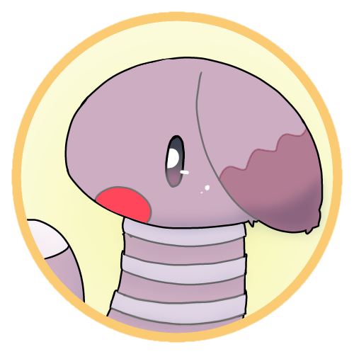
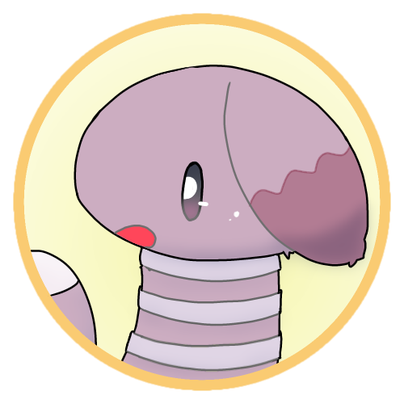
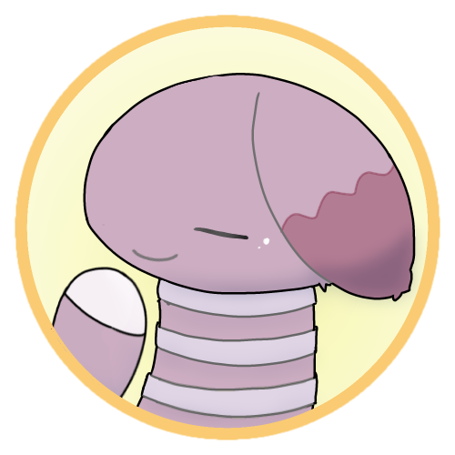

#1 文字と発音を覚えよう！
Chanos prama!
先生をやらせてもらうツィ・トルフィチャだよ！

学習者のレフ・フォンチャだ。
今回は 文字と発音について 解説していくよ！
お願いします。
1.1. アクセント
最初にアクセントについて話しておくね。
チェルスノー語ではアクセントのある母音を 高く
読むよ。

páto だったら「 パ ト 」になるんだな。
チェルスノー語ではアクセント記号（◌́）は単に高く読む音を示しているだけなので、
一単語に複数個ついている場合もあるよ。
了解した。
1.2. 母音
1.2.1. 母音の種類
まずは 母音 を見ていこう！

| 暗母音 | ||
|---|---|---|
| 文字 | 発音 | 発音方法 |
| a | /a/ | ア |
| o | /o/ | オ |
| u | /u/ | ウ |
| ë | /ə/ | 力を抜いてエ |
| i | /〇ʲi〇ʲ/ | イ |
| y | /〇ʲi/ | イ |
| e | /〇ʲe/ | イェ |
| ö | /〇ʲø/ | 口をすぼめた イェ |
これらの母音は 暗母音 と 明母音 に分けられるよ！

| 母音 | ||
|---|---|---|
| 暗母音 | 明母音 | |
| a | e | |
| u | i | |
| o | ö | |
| ë | e | |
何に使うんだ？
子音について話す中で出てくることになるよ。

1.2.2. ũ /N/
ũ /N/ は音節主音になれる鼻音を表すよ！
（ 日本語話者の人は「 ん 」と似たものだと考えるといいかも！ ）
1. 通常は、前の子音と似た種類の鼻音になります。
ũgál ― /N.gál/, [ŋ̍.gɑl]
gjámũ ― /gʲá.mN/, [gʲæ.m̩]
2. 直後に子音がある場合、その音と似た種類の鼻音になります。
bádũm ― /bá.dNm/, [bɑ.dm̩]
特殊な音なので優先順位は低めかなー。
1.2.3. その他の規則
ia, io などの i+母音 のものは、/○ʲi∅ʲ母/ と発音されるよ！
“mia” なら /mʲi∅ʲa/、つまり「 ミヤ 」のように発音されるんだな。
その通り！「 イア 」のようにはならないから注意してね！
1.3. 子音
1.3.1. 暗子音
子音も 暗子音 と 明子音 に分けられるよ。
まずは最も基本的な暗子音から見ていこう！
基本的には ローマ字読み で大丈夫！
一部の文字は特殊な読み方をするから注意してね！
（ ローマ字ってなんだ……？ ）
| 暗子音 | ||
|---|---|---|
| 文字 | 発音 | 発音方法 |
| p | /p/ | パ行の音。 |
| b | /b/ | バ行の音。 |
| t | /t/ | タ行の音。 |
| d | /d/ | ダ行の音。 |
| k | /k/ | カ行の音。 |
| g | /g/ | ガ行の音。 |
| f | /f/ | ファ行の音。 |
| v | /v/ | ヴァ行の音。 |
| s | /s/ | サ行の音。 |
| z, x | /z/ | ザ行の音。 |
| c | /ts/ | ツァ行の音。 |
| sh | /ʂ/ | 舌を反らせてシャ行の音。 |
| zh, xh | /ʐ/ | 舌を反らせてジャ行の音。 |
| ch | /ʈʂ/ | 舌を反らせてチャ行の音。 |
| h | /h/ | ハ行の音。 |
| m | /m/ | マ行の音。 |
| n | /n/ | ナ行の音。 |
| q | /ŋ/ | カ゚行の音。いわゆる鼻濁音の音。英語の ng の音。 |
| r | /r/ | 日本語のラ行の音。巻き舌だと rh になるので注意。 |
| rh | /ʀ/ | 喉奥を震わせる音。巻き舌でもOK！ |
| l | /l/ | 英語の L と同様。ラ゚行。 |
以下の場合に暗子音で発音されるよ！
1. 暗母音が続く場合。
páta ― /pá.ta/
2. 直前または直後に u がある場合。
kuéto ― /ké.to/
mýgo ― /mʲí.go/
y が暗子音の項で説明されてるのはなんでだ？
y の由来が “iu” だから。
よく使われるから一文字になった感じかな。
1.3.2. 明子音
明子音も基本的には ローマ字読み で大丈夫！“j” はヤ行の音になることだけ注意してね。
子音に小さい「 ィ 」がつくイメージで発音すると良い感じ！
| 明子音 | ||
|---|---|---|
| 文字 | 発音 | 発音方法 |
| j, rhj | /j/ | ヤ行の音。 |
| pj | /pʲ/ | ピャ行の音。 |
| bj | /bʲ/ | ビャ行の音。 |
| tj | /tʲ/ | テャ行の音。 |
| dj | /dʲ/ | デャ行の音。 |
| kj | /kʲ/ | キャ行の音。 |
| gj | /gʲ/ | ギャ行の音。 |
| fj | /fʲ/ | フャ行の音。 |
| vj | /vʲ/ | ヴャ行の音。 |
| sj | /sʲ/ | スャ行の音。 |
| zj, xj | /zʲ/ | ズャ行の音。 |
| cj | /tsʲ/ | ツャ行の音。 |
| shj | /ʂʲ/ | 日本語のシャ行の音。 |
| zhj, xhj | /ʐʲ/ | 日本語のジャ行の音。 |
| chj | /ʈʂʲ/ | 日本語のチャ行の音。 |
| hj | /hʲ/ | ヒャ行の音。 |
| mj | /mʲ/ | ミャ行の音。 |
| nj | /nʲ/ | ニャ行の音。 |
| qj | /ŋʲ/ | キ゚ャ行の音。いわゆる鼻濁音の音。 |
| rj | /rʲ/ | 日本語のリャ行の音。 |
| lj | /lʲ/ | リ゚ャ行。 |
以下の場合に明子音で発音されるよ！
1. 直後に j が続く場合。
njáfa ― /nʲá.fa/
2. 明母音が続く場合。
mýgo ― /mʲí.go/
3. 直前または直後に i がある場合。
póina ― /pó.nʲa/
結構ルールが面倒だな。
子音の明暗は重要なので、しっかり覚えるようにしてね！
わかった。
下線部分が「 暗子音 」か「 明子音 」か答えなさい。
1. páto
2. sjáto。
3. ména
4. zýka
5. cíca
1.3.3. 長子音
二つの子音が隣り合うと、長子音 と呼ばれるものになるよ！
（ 日本語話者の人は促音と同じものだと考えるとイメージしやすいかも！ ）
1.3.4. 特殊な子音
詳しくは別でやるけど、よく使われるもので ph があるから紹介しておくよ！
これは f と同じ音になるよ。
俺の名前、Lueph Foncha にも使われている文字だな。
今回でほとんどのものは読めるようになるね！
私の名前の Cuj Torficha も読めるかな？
今回はここまで！
規則は多いけど、例外はほぼないから、一回覚えれば読めるようになるよ！
学習を進めながらゆっくり覚えるのも良いと思う。
辞書なんかも見ながら覚えていくか～。
より発音を知りたい方は 1.5回 に進んでね！
初めてチェルスノー語を学ぶ人は第2回に進むのがオススメです。